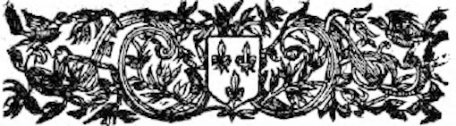
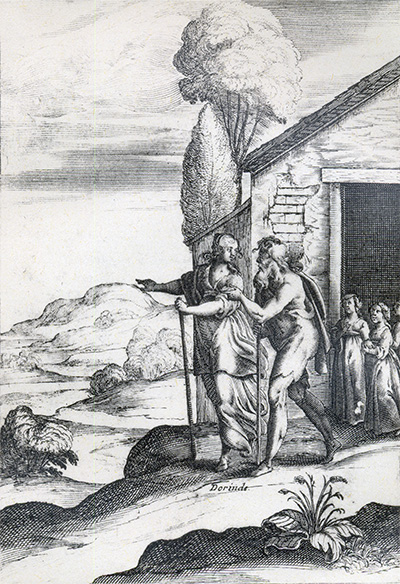
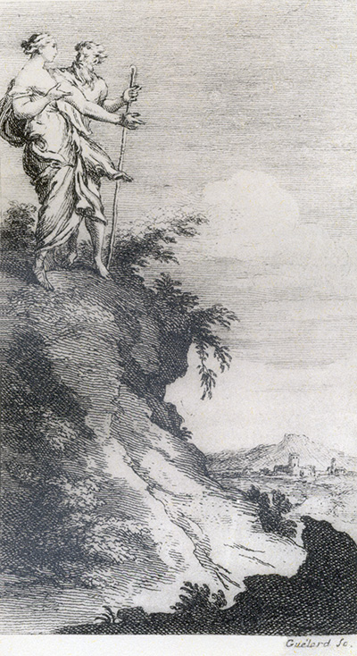
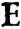
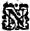
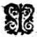

L'Astrée d'Honoré d'Urfé
Quatrième partie
Livre 4

Le vieil homme et Dorinde.
« Il ne m'abandonnerait point que je ne fusse en Forez, espérant, à ce qu'il me dit,
que les Dieux garderaient sa petite famille » (IV, 4, 909).
L'Astrée. Édition Vaganay**, 1925, IV, 7.Le vieil homme et Dorinde.
« Il ne m'abandonnerait point que je ne fusse en Forez, espérant, à ce qu'il me dit,
que les Dieux garderaient sa petite famille » (IV, 4, 909).
(Voir Illustrations)

Gravure signée Guélard.
Le vieil homme et Dorinde.
« Il me montra avec son bâton la ville de Feurs assez proche » (IV, 4, 911).
L'Astrée. Édition Vaganay**, 1925, IV, 7.Gravure signée Guélard.
Le vieil homme et Dorinde.
« Il me montra avec son bâton la ville de Feurs assez proche » (IV, 4, 911).
(Voir Illustrations)
était impossible d'en trouver une meilleure commodité, après s'être tue quelque temps reprit la parole de cette sorte :
HISTOIRE
De Dorinde, du Roi Gondebaud,
et du Prince Sigismond.
allait point de ma faute, mais ce qui la contenta le plus ce fut de voir la lettre encore cachetée, de quoi après m'avoir grandement louée, elle l'ouvrit et lut qu'elle était telle :
LETTRE
SONNET.
Il la voit infidèle et il ne se peut
empêcher de l'aimer.
ELle me l'a promis la menteuse qu'elle est,
Et maintenant, Amour, elle s'en veut dédire,
Et croit qu'ayant sur vous un souverain empire,Rien ne peut l'obliger sinon ce qui lui plaît.
Mais puisque sa parole à rien ne la soumet,
Et que de sa promesse elle ne fait que rire,
Promettre, à son langage, est-ce peut-être à dire
N'observer jamais rien de ce qu'elle promet ?
Si son langage est tel, son amitié promise
Avec tant de serments n'est donc qu'une feintise ;
Ô Dieu, je le vois bien, et qui ne le voit pas ?
Mais à quoi me sert-il, si les beautés sont telles
Qu'il me les faut aimer jusques à mon trépas
Quoique je sache bien qu'elles sont infidèles ?
Les Chevaliers Sauvages,
AUX DAMES.
STANCES.
NOus ne sommes pas si sauvages
Qu'on jugerait à nos visages.
Amour en peut être vainqueur,
Et peut faire brûler nos âmes
Aussi bien que tout autre cœur,
Dedans le feu des belles Dames.
Sachez, les belles, que nous sommes
Tout ainsi que les autres hommes,
Sujets aux coups de la beauté.
Il est vrai que notre courage,
Tout plein de générosité,
Ne peut supporter un outrage.
C'est la beauté qui nous attire
Dessous les lois de votre empire.
Mais les faveurs de la beauté
Rendent nos cœurs comme insensibles,
Et ravissent la liberté
À nous qui sommes invincibles.
Qui voudra donc, pleine de gloire,
Avoir de nos cœurs la victoire,
Qu'elle apprête avec ses appâts
La faveur et la récompense,
Ou bien qu'elle ne pense pas
D'en avoir jamais la puissance.
Sur un éventail
η.
TRop heureux vantail, que je porte d'envie,
Quand je me considère, au bonheur qui t'attend
η !
Que je serais heureux si j'en avais autant,
Et que j'estimerais la douceur de la vie !
Tu baiseras la main qui m'a l'âme ravie,Et le feu de ses yeux quelquefois éventantDe cent et cent baisers elle t'ira flattant
η
Comme pour payement de l'avoir bien servie.
Je te donne, vantail, à celle à qui je suis.
Tu seras auprès d'elle, et moi je ne le puis,
Tant est grand ton bonheur et mon malheur extrême.
Que le cruel destin se moque bien de moi,
Puis, heureux éventail, que
η
je fais plus pour toi
Qu'il ne m'est pas permis de faire pour moi-même.
Vois, Dorinde, quels sont tes charmes :
La neige se fond au Soleil,
Mais mon cœur se fond tout en larmes
Quand je suis loin de ton bel œil.
la Princesse, d'en user ainsi et de vivre avec la même discrétion que vous avez jusques ici vécu. Et lors le Prince lui ayant donné le bonsoir se retira en son logis d'où il m'écrivit incontinent cette lettre :
LETTRE
Du Prince Sigismond à Dorinde.
ORACLE
En Forez se trouvera
Ce qui ton mal guérira.
Fin du quatrième livre.

Livre 3

Livre 5
Référence électronique :
document.write('"'+document.title.substr(0, document.title.indexOf("-")-1)+'". '+"Dernière mise à jour : "+ExtractDate(document.lastModified)+".")Deux visages de L'Astrée.
©2005-2020 E. Henein.
URL :
var today = new Date();
document.write(document.URL +
"<br>Consulté le : " + today.toLocaleDateString("fr-FR") + ".");
var _gaq = _gaq || [];
_gaq.push(['_setAccount', 'UA-19288475-1']);
_gaq.push(['_trackPageview']);
(function() {
var ga = document.createElement('script'); ga.type = 'text/javascript'; ga.async = true;
ga.src = ('https:' == document.location.protocol ? 'https://ssl' : 'http://www') + '.google-analytics.com/ga.js';
var s = document.getElementsByTagName('script')[0]; s.parentNode.insertBefore(ga, s);
})();
Deux visages de L'Astrée.
©2005-2019 Eglal Henein. Creative Commons 4 
Édition critique de la première partie de L'Astrée (1607, 1621)
mise en ligne le 9 avril 2007
Édition critique de la deuxième partie de L'Astrée (1610, 1621)
mise en ligne le 10 octobre 2010
Édition critique de la troisième partie de L'Astrée (1619, 1621)
mise en ligne le 1er novembre 2014
Édition critique de la quatrième partie de L'Astrée (1624)
mise en ligne le 15 janvier 2019
document.write("Dernière mise à jour : "+ExtractDate(document.lastModified))